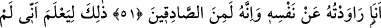

HAZRET-İ YÛSUF’UN
BERÂETİ
50. (Adam bu yorumu getirince) kral: “Onu bana getirin!” dedi. Elçi, Yûsuf’un
yanına gelince (Yûsuf): “Efendine dön de ona: ‘Ellerini kesen o kadınların zoru
neydi?’ diye sor. Şüphesiz benim Rabbim onların hîlesini çok iyi bilir.” dedi.
51. (Kral kadınlara): Yûsuf’un nefsinden murâd almak istediğiniz zaman
durumunuz neydi?” dedi. Kadınlar: “Hâşâ! Allah için, biz ondan hiçbir kötülük
görmedik.” dediler. Azizin karısı da dedi ki: “Şimdi gerçek ortaya çıktı. Ben onun
nefsinden murâd almak istemiştim. Şüphesiz ki o doğru söyleyenlerdendir.”
52. (Yûsuf dedi ki): Bu, azizin yokluğunda ona hâinlik etmediğimi ve Allah’ın
hainlerin hîlesini başarıya ulaştırmayacağını (herkesin) bilmesi içindir.”
53. “(Bununla beraber) nefsimi temize çıkarmıyorum. Çünkü nefis aşırı şekilde
kötülüğü emreder, Rabbimin acıyıp koruduğu başka. Şüphesiz Rabbim çok
bağışlayan, pek esirgeyendir.”
Elçi bu yorumu getirince, Mısır “Kral”ı Reyyan: “Onu” yani Yûsuf’u “bana
getirin!” dedi.” Şöyle ki: Sâkî, mezkûr rüyanın yorumu ile birlikte ileri gelenlerin de
mecliste bulunduğu bir sırada kralın yanına döndü. Yûsuf’un rüyasına getirdiği bu
yorum kralın çok hoşuna gitti. Onun çok bilgili ve faziletli biri olduğunu anlayarak ona
ikramda bulunmak, yakınına getirterek mezkûr tâbiri bizzat kendi ağzından duymak
istedi.
Dosttan getirdiğin bu söz şekerdir
Fakat kendi bizzat söylerse daha hoştur